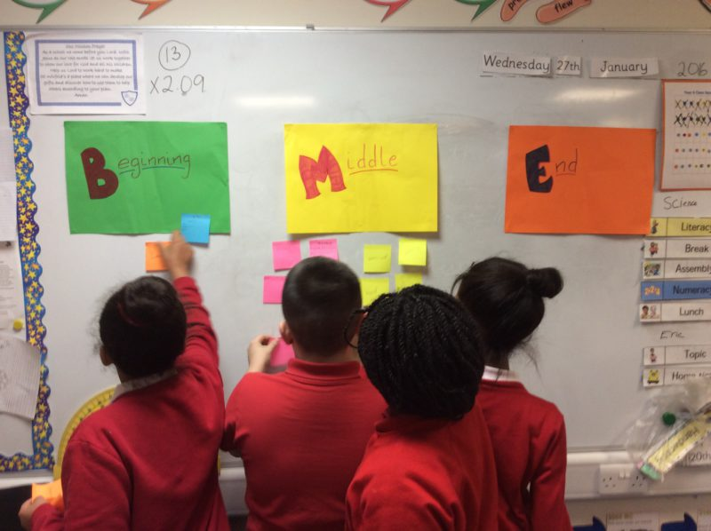

Step by step instructions to run an activity exploring Pop Art using an Andy Warhol inspired approach.
Before starting, gather children into groups of 4.

Step by step instructions to run an activity exploring Pop Art using an Andy Warhol inspired approach.
Before starting, gather children into groups of 4.
This week EdLab collected people from the Funologists network together to share ideas around augmented reality. Dee Vyas came along from MMU’s digital innovation to share their work on augmented reality. They use the free to download app Aurasma, and started by demonstrating an augmented image of penguins.
A group of EdLab students planned and delivered a Time-Traveller Project to take the students of Broadoak Primary School on a historical journey through time. Students travelled back to Ancient Greece, took a tour around the 60s and leapt into the future aided by the Doctor, her companion and special friends.
The pupils were shown four fun and entertaining Dr Who-themed trailers that were produced prior to the day by Edlab students Martin and Amy. These fantastic teasers starred all the Time-Traveller Team. This really helped the pupils grasp what to expect on this exciting day. Edlab students Jessica, Georgina and Asma attached themselves to each time-travelling class to ensure that the pupils whizzed safely from one era to the next.
EdLab students helped to create and deliver a poetry writing workshop for young and old. The initial challenge was to develop a workshop which could be delivered to the community in order to promote the university’s Poetry Together competition which aims to get under and over 18s writing poetry together!


EdLab students Joanne, Fleur, Taybah, Sana and Amina decided that a session on social issues, using photographs and poems as stimuli would inspire intergenerational poetry. They collected their own images and poems and displayed them around the room. The idea was to make connections between the things concerning young and old.
On the day, Faiza and Tania also supported the workshop, and those who came gave positive feedback. The negative social issues raised in the sessions regarded mostly traffic related problems and there were some feat poems about pollution. Some also chose to write about positive social aspects of where they live, and these were parks, friends and food!


This was a really enjoyable event, and really gave our students some valuable experience in workshop development and delivery. We had over 36 workshop participants, and generated some inspiring poems by young and old working together!
To set us a challenge, or respond to a challenge contact us edlab@mmu.ac.uk
EdLab was supported by MMU education students to create a pop up activity at the Poetry Together Trailblazer Event.
We asked the young people (and older ones too)…
Would you like us to turn you into a Robot?

We had a range of different short poems on technology available to read into a microphone and record into the Audacity programme. An effect was then applied (echo) to make them robotic. The results are below.
Theo
Ali
Fatimah
 A live audio recording of the sounds created during last week’s We are the Robots hacks at The Shed – aimed at 14-19 year-olds – is now available to listen to on SoundCloud.
A live audio recording of the sounds created during last week’s We are the Robots hacks at The Shed – aimed at 14-19 year-olds – is now available to listen to on SoundCloud.
Produced over two days on 17 and 18 February, the bleepy, robotic mash-up clocks in at nearly four minutes and is reminiscent of experimental electronica mixed with musique concrete.
We are in the process of developing a series of activities at Birley that are aimed at getting Key Stage 3 girls enthused about science, The focus of this project is to foster engagement and learning surrounding creative STEAM activities. The target schools will be selected from those identified by MMU’s Widening Participation team.

Student-teacher volunteers will take an active role in the delivery of a series of after-school workshops.
Elements of the programme include:
This month’s reflection session had a focus on the foundation cohort’s report writing. Their reports give them a structure for articulating and analysing educational experiences such as those provided by EdLab.
The EdLab team used our recent skills shared by the Noisy Toys team and PGCE students to the maximum when we hosted an interactive session based on Computing and coding for Year 9 girls from Hyde Community College.
We drew on our strengths to deliver coding using music, experimentation with acoustic ecology. The most fun bit for us was making recycled computer parts bleep and squeek. This is great preparation for our upcoming Funologists launch and the Manchester Robot Orchestra.
Nicola Whitton gave an EdLab workshop which broke down the concepts and tools needed to create games in a very engaging way. The approach was not dependent on the delivery mechanism of the game and so could include, board games, card games, apps or computer games.


Today Edlab students and Dr Sam took our Science Poetry workshop to year 6 at St Wilfrid’s RC Primary School.
Students Aiysha, Sonia and Chantelle from our foundation year supported the session as part of their EdLab project. They said that they were nervous about the session beforehand, but after supporting Dr Sam in delivering it to year 6 pupils they were:
“excited about being in primary school again.”
Pupils at the school came up with some excellent poems and described the experiments as
“Exotic like a Carnival”
https://twitter.com/EdLabMMU/status/692342002730541056
Students will now help to develop lasting resources connected to this project that schools can access for free.
If your school would like to be involved in future projects please contact us at edlab@mmu.ac.uk
If you are a student and would like to be involved in similar projects, we have recently created a funologists team that we would invite you to join here.
The EdLab team brought together the PGCE Students from Music and Computing and the Steve Summers from Noisy Toys explore cross curriculum possibilities and generate new ideas for workshops.
Beyond the uses that the teacher trainees put these ideas to in their future lessons out in schools, we also asked inter-subject groups to work together to plan after school sessions for Year 6 /7.

MMU Funologists is a team project involving students and staff from any MMU department who are using ‘serious’ play to help STEAM (Science, technology, engineering, arts and maths) learning happen. We love tinkering, making things and chatting about it. Come and play, seriously!
When we play interesting things happen. Lots of research shows that this is a key way to find out more about the world and solve problems. So if play is so good. Why don’t we do more of it?

Last week we ran a Video Making creative space for EdLab and MMU Futures Students.
“I feel like I improved my speaking skills, and I feel more confident in speaking in front of the camera now”
Here, Fleur, Roxanna, Laura and Kate review the creative space:
One of the key parts of the EdLab project is creating chances for interaction between students and local education projects. To increase the experience of different learning worlds our students have access to we invite local partners to Set Students A Challenge.
This Volunteering Fair was a quick way for groups and students to find out more about each other. They key for students to come up with appropriate responses to the challenges is for them to be able to find out in-depth information from the groups themselves about their needs and context.


Also the personal connection is great for firing enthusiasm and creating positive feedback loops! There were some very sparky students and representatives from groups there.
{kind=link}
{kind=link}
{kind=link}
{kind=link}
{kind=link}
{kind=link}
{kind=link}
{kind=link}
{kind=link}
{kind=link}
{kind=link}
{kind=link}
{kind=link}
{kind=link}
{kind=link}
{kind=link}